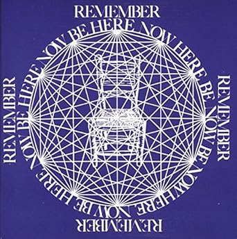
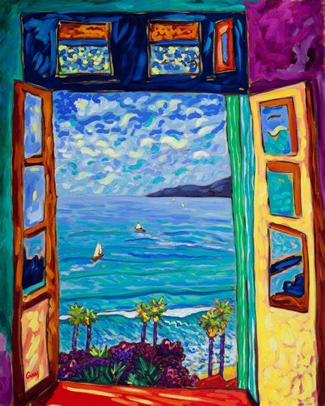

Home | Assignments | Modellenschema | Verslag en Reflectie Tussengesprek | Boekbesprekingen | Korte Reflecties per Vak | Lesopdrachten | Eind Reflectie
Index¶
- Index
- Verandering in Organisaties
- Essentie
- IND.md
- Relatie met Veranderkunde
- Relatie met andere modellen
- Zelfreflectie
Going Home - Ram Dass¶
Essentie¶

The best way to plan for the future is to be in the present.
-
"When I am here, I am here, and when I am not here, I am not here."
-
"It's interesting that when you give someone your full attention, a little is enough. Whereas when you give half your attention, it's never enough."
Het onderstaande is verdieping over het principe van Ram Dass. Deels vertaald in mijn woorden.¶
Anders HIER klikken om door te gaan naar de relatie met Veranderkunde.
Prescence¶
Het omvat het vertragen, of zoals Otto Scharmer in zijn boek Prescencing zegt, supsensie.
"And that's why we use poetry and art, because it is someone reminding us of the appreciation of the simplest thing of
a
bowl of fruit or light coming in through a window pane.
What Gauguin or Matisse can do is really quite incredible."

Paul Gauguin

Matisse, Window
"I have a feeling that the spiritual path, tends to get people in treating this as trivial the earth plane. Until they see that the earth itself is the manifestation of God, and then they begin to treat it with reverence."
Loop met eerbied¶
Het volgende stuk was helaas niet te vertalen:
When you're around the American Indians, who are steeped in their own tradition, they walk on the earth with reverence.
You can feel that, the way they walk on the earth.
And when they do that, it reminds me about what's happening. And it's such a gift to be reminded that way.
So we remind each other, we help each other do that.
I mean the driving to somewhere is as much as it is getting to the place. The walking to the cabin is as much as the being at the cabin.
There;s a whole quality of learning and stopping into the moment.
I have a little excercise to appreciate just what's happening at this moment. Here I am, 58 years old, I am driving my car, and I move it down a level and keep describing what's going on,
and the moment gets so thick, each plane and it's like baklava,
and each plane has nuts in it. ;)
Tools om in het moment te landen¶
Het gevoel van nooit genoeg te doen, of dat nu op school of thuis is, komt vaak voort uit een te volle agenda.
Het is niet dat er niet genoeg tijd is, maar dat de balans ontbreekt. Ram Dass beschrijft heel mooi een techniek hiervoor:
- Doe en stapje terug, creëer je de "ruimte voor je bewustzijn"
Dit omvat het kijken naar alle elementen in je agenda/leven, en kijken of alles nog wel echt past bij wie je bent. En anders de delen te schrappen. - Het principe van "When I am here, I'm here" Zodra je weet dat alles in je leven er hoort te zijn, kun je volledig in het moment aanwezig zijn. Dit maakt zelfs de simpelste moment rijk aan betekenis en soms zelfs spiritueel of ritueel.
Door met deze twee simpele stappen te experimenteren wordt het makkelijker om echt in het moment te leven.
Het grootste cadeau dat ik mijzelf en mijn geliefden kan geven, is echte aanwezigheid. Dat ik
- Volledig werk als ik werk
- Echt de afwas doe als ik de afwas doe
- en met onverdeelde aandacht bij hun ben.
Sterker nog, ik geloof van harte dat zelfs het moment bij de cassiere in de supermarkt het verdiend om echt samen te zijn. Wie is te zeggen dat het niet ons laatste moment is? En waarom zou ik dan ooit willen dat ik ongeïntresserd en half aanwezig daar ben, laat ons samen zijn als we samen zijn.
Het klinkt een beetje zsa-zen, maar het is bijna nog simpeler.
Relatie met Veranderkunde¶
Een van zijn quotes die perfect past bij de leer van veranderkunde is het volgende dat hij gezegd heeft: "Make friends with change"
En hoe doe je dat? Nou allereerst moet je wel bewust zijn van waar je nu bent. Wat er aan het veranderen is heeft feitelijk niets te maken met het verleden of de toekomst, volgens Ram Dass zitten we eigenlijk continu in een nieuw NU moment. Daarvan bewust zijn is de beste stap die we kunnen maken.
Relatie met andere modellen¶
Zelfreflectie¶
Ik heb van dit theorie geleerd, hoe ik mezelf kan centreren in het moment, en bewust kan worden van wat er echt gaande is.
Theorie¶
Simpel gezegd heb ik van Ram Dass geleerd hoe ik mijn leven kan leven. Zoals Will Rogers ooit zei: "Half our life is spent trying to find something to do with the time we have rushed through life trying to save."
Helaas is dat maar al te waar, en Ram Dass probeert ons hier een uitweg uit te bieden. Wees echt in het moment, bewust en diep, en rijk, als een meerlagige baklava of spekkoek, elke laag die je terugtrekt zal verassende wekrelijkheden laten ontplooien.
Alan Watts had hier een nog betere metafoor voor. De Schillen van de Ui, zie Metafoor voor de uitleg over deze.
Persoonlijk¶
Net zoals in Theory-U, is dit zeker het oefenen waard, waar de suspensie nodig is om de diepere motivaties te ontaarden, is het landen in het nu - "Be here now", een vrijwel gelijke oefening, met bijna hetzelfde resultaat.
Voor de rest van mijn leven zal ik blijven oefenen om in het moment. Het is een proces, een oefening, een traject van vergeten en weer oppakken. Dat is eigenlijk juist het mooie van het menselijk bestaan.
Het zal op die manier ook nooit saai worden. Maar soms moeten we onszelf eraan herinneren.
Relationeel¶
Relationeel gezien kan ik deze bewustwording juist heel goed toepassen. Door me hiervan bewust te zijn, kan ik me makkelijk inbeelden dat een ander die heel boos of gestressed overkomt, dat echt aan het beleven is. Terwijl ik besef dat er niets anders is dan het huidige moment, kan ik hopelijk hun stress opvangen met een kalme en oprechte omarming.
Maar soms moeten we elkaar eraan herinneren.